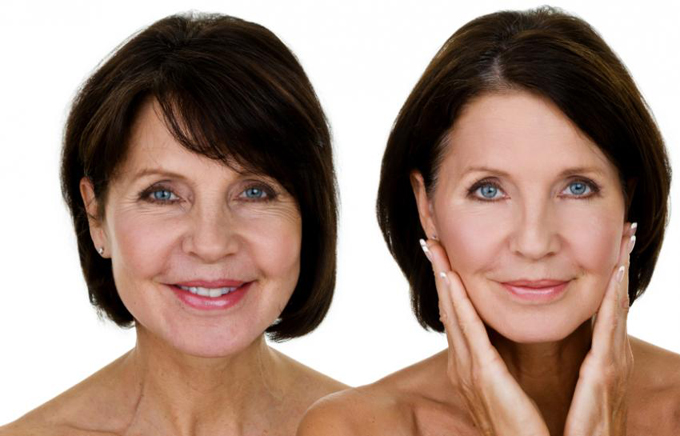

Lifting
Макияж с эффектом лифтинга имеет много общего с техникой стробинга. Такой тип сейчас чаще
используется зрелыми женщинами для того, чтобы скрыть недостатки, которые проявляются на коже с возрастом.
Этот макияж также часто называют омолаживающим.

Для выполнения мэйка в этой технике используются бронзер,
хайлайтер и простые матовые тени.
{% endblock %}